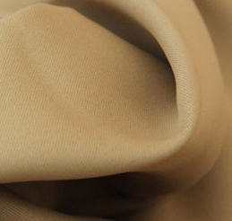
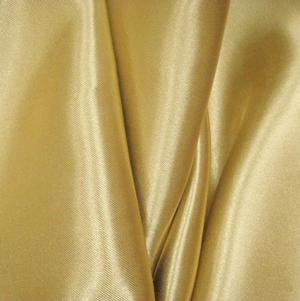
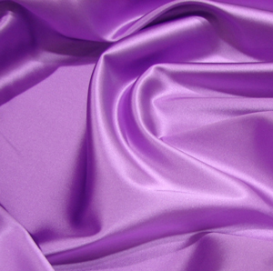
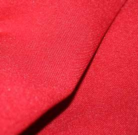
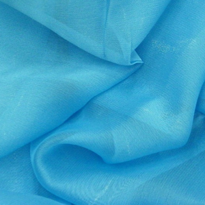

|
|
| Выбор ткани |
При изготовлении фотоштор, фототюлей и фотопокрывал применяются только качественные материалы европейского производства (Бельгия, Голландия, Финляндия):
БлэкАут/БлекАут (BlackOut) – это трёхслойная светонепроницаемая (светонепроницаемость 97-99%) ткань бело-серого цвета из полиэфирного волокна (100% полиэстер, плотностью 274 г/м2) с двойным сатиновым переплетением с однонаправленной сердцевиной. Сердцевина – черная нить, оплетена с обеих сторон отбеленной нитью. Ткань БлэкАут обладают уникальной способностью задерживать даже самый яркий солнечный свет, не выцветают, замечательно сохраняют форму, обладает тепло- и звукоизоляционными качествами. Используют данный материал, в основном, для пошива штор и оформления интерьеров. Изначально ткань блэкаут была изобретена в Финляндии, так как в этой стране всегда была острая необходимость в затемнении помещений из-за "белых ночей". Продукт изготовленный из этой ткани выглядит очень привлекательно, дорого, качественно.

Отличительные свойства ткани Блэкаут:
- Задерживает солнечный свет
- Повышенная шумоизоляция
- Сохраняет тепло
- Не горючая
- Не линяет при стирке
- Отлично держит форму
- Высокая плотность
- Износостойкость
- Абсолютно не токсична и не алергенна
- Не нуждается в глажке
- Эстетична на вид
Сатен/Сатинет - белая, 100% полиэфирная ткань сатинового переплетения с высокой плотностью 183 г/кв.м, отличного качества, износостойкая. Матовая, с одной стороны шелковистая, напоминает атлас по ощущениям. Отличительное свойство – не дает бликов, хорошо рассеивает свет.

Отличительные свойства ткани Сатен:
- Материал отлично пропускает воздух
- Обладает хорошей гигроскопичностью
- У него хорошая теплопроводность
- Абсолютно не электризуется
- Материал мало мнется
- Приятен на ощупь
- Хорошо драпируется
- Износостойкое и долговечное полотно
- Подходит для тех, у кого чувствительная кожа
- Не садится после стирки
Атлас - белая, шелковая, блестящая и гладкая на ощупь, атласного переплетения,плотностью 140г/кв.м. Это красивый плотный материал с шелковым ровным блеском. Изделия из атласа чрезвычайно приятны на ощупь и эффектно выглядят.

Отличительные свойства ткани Атлас:
- Очень прочный материал
- При правильном уходе весьма долговечен и сохраняет блеск в течении нескольких лет
- Отлично впитывает влагу
- Натуральные разновидности обладают способностью улучшать метаболизм и обладают гипоаллергенными свойствами
- Не электризуется
- Хорошо драпируется
Габардин - белая, плотная (180 г/кв.м), 100% полиэфирная, матовая ткань полотняного переплетения, недорогая. Габардин – это ткань, проверенная временем. Главной отличительной особенностью габардина является диагональный узор – рубчик, но он практически не бросаться в глаза, так как материя соткана из тонких синтетических волокон.

Отличительные свойства ткани Габардин:
- Материал мягко, красиво драпируется, особенно при раскрое по косой
- Несмотря на свою высокую плотность, ткань достаточно легкая и мягкая
- Хорошо держит форму и не деформируется при стирке
- Хорошо пропускает воздух
- Устойчив к износу
- Хорошие эксплуатационные характеристики: легко гладить, хорошо выводятся пятна
- Устойчив к намоканию. Нити в ткани настолько туго скручены, что отталкивают воду
Шифон - это легкая ткань простого сетчатого переплетения, за счет которого она приобретает полупрозрачность. Слово «шифон» имеет французское происхождение, что означает «ткань». Изготавливается из полиэстера, благодаря чему отличается большей долговечностью, и позволяет стирать его на деликатном режиме в машинке при невысоких температурах, хотя ручная стирка все же предпочтительнее.

Отличительные свойства ткани Шифон:
- Тонкость
- Прозрачность
- Легкость
- Хорошая драпируемость
Комплект ФотоШтор состоит из 2-х полотен, шириной и высотой на выбор:
- ширина от 100 см до 150 см
- высота от 150 см до 350 см
Крепление: Шторная лента (за крючки)
Уход: машинная стирка при 30°
Упаковка: Сумка ПВХ 43*32*7
Мы изготовим фотошторы и фотопокрывала по любому Вашему изображению, удовлетворяющему качеству - разрешение не менее 300 dpi, формат PSD, TIFF, качественный JPEG (размер файла не менее 4 мб). Либо Вы можете выбрать любое фото на портале www.shutterstock.com, и прислать нам ссылку на него.
Продукция с Вашим изображением производится при условии полной предоплаты.
|
|
|
|